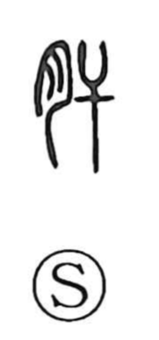

肝

Uncategorized
Kun: kimo | On: kan
liver ・ vital importance ・ courage
Explanation
A phono-semantic character: the flesh element marks an internal organ, while the phonetic 干 gives the on reading kan. It names the liver (kimo), long regarded as preeminent among the five viscera, hence expressions that make it the emblem of what is essential—such as kanjin (肝腎, liver and kidneys: the crucial point) and kanyo (肝要, of vital importance; with 要 originally linked to the waist). The liver was also imagined as a seat of the kokoro, so compounds like shinkan (心肝, heart and liver) and kantan (肝胆, liver and gallbladder) evoke one’s innermost sincerity, as in the idiom kantan aiterasu, “to open one’s inner being to each other.”